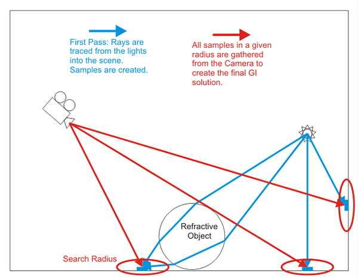
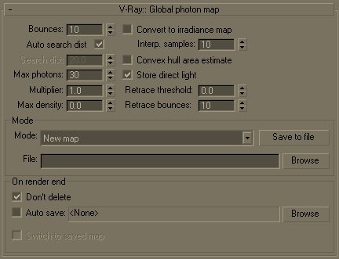

Global Photon Map
Global Photon Map Overview
The global photon map is somewhat similar to the irradiance map. It is also used to represent the lighting in the scene, and it is a collection of points in 3D space (a point cloud). However, the photon map is built in a different way. It is built by tracing particles (photons) emitted by the scene lights. Those photons bounce around the scene and hit various surfaces. The hit points are stored in the photon map.
Reconstructing the illumination from the photon map is also different from the irradiance map. With the irradiance map, a simple interpolation is used to blend the nearby GI samples. With the photon map, we need to estimate the photon density at a given point. The idea of density estimation is central to the photon map. V-Ray can use several methods for density estimation, each with its own advantages and disadvantages. Usually these methods are based on looking for the photons that are nearest to the shaded point.
Note that, in general, the photon map provides a less accurate approximation of the scene illumination than the irradiance map, especially when it comes to small details. The irradiance map is built adaptively, whereas the photon map is not. Also, a major disadvantage of the photon map is the boundary bias. This unwanted effect is mostly visible around corners and object edges, which appear darker than they should be. The irradiance map can also exhibit boundary bias; however, its adaptive nature allows one to decrease the effect greatly. Another disadvantage of the photon map is that it cannot simulate illumination from skylight. This is because the photons need an actual surface to be emitted from. The skylight, at least in V-Ray, is not a surface actually present in the scene.
On the other hand, the photon map is view-independent and can be computed relatively quickly. This makes it ideal for approximating the scene illumination when used together with more accurate methods like direct computation or the irradiance map.
The following diagram shows the way the Photon Map is generated. In the first pass (Blue) rays are traced from each light into the scene which generates light samples across the entire scene. In the second pass all samples in a specified radius are gathered from the camera in order to create the final GI solution.

Global Photon Map Parameters
 Note that the building of the photon map is also controlled by the photon settings of individual lights in the scene. See the Light settings dialogue for more information.
Bounces - this parameter controls the number of light bounces approximated by the photon map. More bounces produce a more realistic result, but take more time and memory.
Auto search dist - when this is on, V-Ray will try to compute a suitable distance within which to search for photons. Sometimes the computed distance is okay, in other cases it might be too big (which will slow down the rendering) or too small (which will produce a more noisy result).
Search dist - this option is only available when Auto search dist is off. It allows you to specify the photon search distance manually. Keep in mind that this value depends on the size of your scene. Lower values will speed up the rendering but may produce more noisy results. Larger values will slow down the rendering but may produce smoother results.
Max photons - this option specifies how many photons will be taken into consideration when approximating the irradiance at the shaded point. More photons mean a smoother (and blurrier) result and may also slow down the rendering. Smaller values mean a more noisy result but will render faster. When this value is 0, V-Ray will use all the photons in the given search range.
Multiplier - this allows you to control the brightness of the photon map.
Max density - this parameter allows you to limit the resolution (and thus the memory) of the photon map. Whenever V-Ray needs to store a new photon in the photon map, it will first look if there are any other photons within a distance specified by Max density. If there is already a suitable photon in the map, V-Ray will just add the energy of the new photon to the one in the map. Otherwise, V-Ray will store the new photon in the photon map. Using this options allows you to shoot many photons (and thus get smoother results) while keeping the size of the photon map manageable.
Convert to irradiance map - this will cause V-Ray to precompute the irradiance at the photon hit points stored in the photon map. This allows fewer photons to be used when interpolated the irradiance during rendering, while keeping the result relatively smooth. It is important to note that the resulting map stores irradiance, but is not the same as the irradiance cache used by V-Ray for primary diffuse bounces.
Interp. samples - this controls how many irradiance samples will be taken from the photon map once it is converted to an irradiance map. Larger values produce smoother results, but may be slower; smaller values produces more noisy results but rendering is faster.
Convex hull area estimate - when this is off, V-Ray will use a simplified algorithm for computing the area, covered by a number of photons (by only taking the distance to the farthest photon). This algorithm may cause corners to be darker. Using the convex hull area estimate avoids the dark corners problem, but is slower and not as robust.
Store direct light - when this is on, V-Ray will store direct illumination in the photon map as well. This may speed up the irradiance map or brute force GI, when used as a primary engine, and there are lots of lights in the scene. When this is off, direct lighting will be computed always by tracing the necessary rays. This may slow things down if there are lots of lights in the scene.
Retrace threshold - when this is greater than 0.0, V-Ray will use brute force GI near corners, instead of the photon map, in order to obtain a more accurate result and to avoid splotches in these areas. This may slow down the rendering. When this is 0.0, the photon map will be used always, which will be faster, but may produce artifacts near corners or in places where objects are close to each other.
Retrace bounces - controls how many bounces will be made when retracing corners. If Retrace threshold is 0.0, then this parameter is ignored. Typically this should be equal to the Bounces parameter.
Notes
-
The photon map cannot simulate secondary illumination due to skylight. The photon map is mostly useful for interior scenes with artificial lighting or relatively small windows.
-
The photon map works only with V-Ray materials. Standard materials will receive GI, but will not generate any photons.